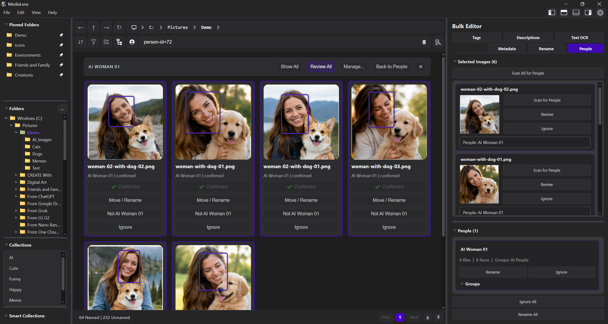

MediaLens
A Windows workspace for large image libraries. Browse fast, search deeply, manage People, compare similar files, run OCR, edit images, and bulk-update metadata without uploading your files.
Current release
v1.4.6
local-first library management, People, OCR, cleanup, bulk editing, and Image Editor updates
What MediaLens does
One app for the whole media-library mess.
MediaLens is not just an editor or a duplicate finder. It is a local workspace for making a large visual library easier to search, review, clean up, and maintain.
Product tour
See the main workspaces first.
Switch through the current MediaLens screens before diving into the details below.


People and facial recognition
Find photos by who is in them.
MediaLens detects faces locally and builds People views you can actually work with.
- Name people, confirm matches, and review unknown faces
- Create custom People groups and favorite important people
- Hide people or groups you do not want in normal views
- Search and filter the library by person
Duplicate and similarity cleanup
Clean up similar files without guessing.
MediaLens shows why files were grouped, then lets you decide what to keep.
- Find exact duplicates and visually similar images
- Spot crops, resized files, compression changes, and color shifts
- Use configurable keep rules or manual review
- Compare images side by side with synchronized zoom and pan

Bulk tools
Update lots of files without tiny hidden dialogs.
These screens are meant for real library work, so the website gives them room.


Search, OCR, and local AI
Make images searchable by what is inside them.
Search by people, objects, text, tags, descriptions, ratings, dates, collections, prompts, and metadata.
- Review OCR text beside the original image
- Generate tags and descriptions with optional local models
- Inspect AI prompt and generation metadata
- Use guided search or advanced search syntax
Image Editor
Make quick edits without leaving the library.
The editor is useful when you need a crop, text note, paint stroke, selection, or small layered adjustment in the middle of organizing files.
- Layers, opacity, visibility, and layer previews
- Paint, eraser, fill, text, crop, Magic Wand, and Lasso tools
- Live brush strokes and marching-ants selections
- On-canvas text bounds and shared color controls

Designed for
Built for people who live inside large image libraries.
AI image creators managing prompts, variants, and edited outputs
Photographers sorting RAW exports, crops, edits, and near duplicates
Families organizing old photo folders by people and dates
Dataset builders curating tags, captions, OCR, and quality signals
Collectors turning scattered folders into searchable archives
Power users who want local control over cleanup and metadata
Get MediaLens
Download the latest Windows installer.
Install MediaLens, choose a folder, and start making your library searchable, editable, and easier to clean up.